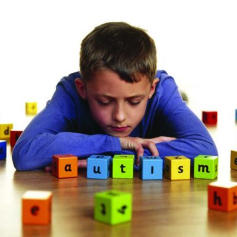

 El concepto de trastorno del desarrollo es un término general que abarca la discapacidad intelectual y los trastornos generalizados del desarrollo, entre ellos el autismo. Los trastornos del desarrollo suelen debutar en la infancia pero tienden a persistir hasta la edad adulta, causando una disfunción o un retraso en la maduración del sistema nervioso central. Por lo general, no se caracterizan por periodos de remisión y recidivas como muchos otros trastornos mentales, sino que siguen un patrón constante. La discapacidad intelectual se manifiesta por la afectación de facultades de diversas áreas del desarrollo, como las habilidades cognitivas y la conducta adaptativa. El retraso mental afecta a la capacidad de adaptarse a las exigencias cotidianas de la vida.
Los síntomas de los trastornos generalizados del desarrollo, como el autismo, son alteraciones del comportamiento social, la comunicación y el lenguaje, así como limitaciones específicas de cada individuo con respecto a sus intereses y actividades, que realiza repetidamente. Los trastornos del desarrollo suelen iniciarse en la infancia o la primera niñez. En ocasiones, las personas afectadas presentan un cierto grado de discapacidad intelectual. La participación de la familia en el cuidado de las personas con trastornos del desarrollo es fundamental. Es importante conocer las situaciones y actividades que causan tensión o reportan bienestar al individuo, así como encontrar el entorno más adecuado para el aprendizaje. El establecimiento de rutinas diarias, fijando momentos concretos para las comidas, el juego, el aprendizaje, el contacto con los demás y el sueño, ayuda a evitar el estrés innecesario. También es importante que los servicios de salud hagan un seguimiento regular a los niños y adultos que presentan trastornos de desarrollo y que se mantengan en contacto con sus cuidadores.
| TRASTORNOS DEL ESTADO DE ÁNIMO |
||||
|---|---|---|---|---|
| Concepto | Los trastornos del estado de ánimo son trastornos de la salud mental caracterizados por la existencia de alteraciones emocionales, consistentes en periodos prolongados de tristeza excesiva (depresión), de exaltación o euforia excesivas (manía), o de ambos. La depresión y la manía representan los dos polos o extremos de los trastornos del estado de ánimo. |
Sintomas | Causas |
|
Si tienes un trastorno del estado de ánimo, tu estado emocional o de ánimo general está distorsionado o no se condice con tus circunstancias e interfiere en tu capacidad para funcionar. Puedes estar extremadamente triste, vacío o irritable (deprimido), o puedes tener períodos de depresión alternados con excesiva felicidad (manía). |
Puede existir variación en las causas de los trastornos del estado de ánimo, sin embargo, se pueden agrupar las causas en dos tipos: Factores biológicos y/o factores psicológicos. Un ejemplo de esto es el hecho de que el trastorno de la depresión se relaciona a la serotonina, una amina biogénica neurotransmisora. |
|||
| Tipos | Trastorno depresivo mayor | períodos prolongados y persistentes de tristeza extrema. | ||
| Trastorno bipolar | también denominado «depresión maníaca» o «trastorno afectivo bipolar»; se trata de una depresión que alterna entre momentos de depresión y manía. | |||
| Trastorno afectivo estacional | forma de depresión que, muy a menudo, está relacionada con tener menos horas de luz solar en las latitudes que se encuentran más al norte y más al sur, desde fines de otoño hasta principios de la primavera. |
|||
| Trastorno ciclotímico | trastorno que provoca altibajos emocionales algo menos extremos que en el trastorno bipolar. |
|||
| Trastorno disfórico premenstrual | cambios en el estado de ánimo e irritabilidad que se producen durante la fase premenstrual del ciclo de la mujer y desaparecen con el comienzo de la menstruación. |
|||
| Trastorno depresivo persistente (distimia) | forma de depresión a largo plazo (crónica). |
|||
| Trastorno de desregulación disruptiva del estado de ánimo | trastorno de irritabilidad crónica, grave y persistente en los niños, que, a menudo, comprende berrinches frecuentes que no son coherentes con la edad de desarrollo del niño. |
|||
| Depresión relacionada con una enfermedad física | estado de ánimo deprimido persistente y pérdida significativa del placer en todas las actividades o en gran parte de estas, que tiene relación directa con los efectos físicos de otra enfermedad. |
|||
| Depresión inducida por el consumo de drogas o medicamentos | síntomas de la depresión que se presentan durante el consumo de sustancias, o poco después de este, de la abstinencia o después de la exposición a un medicamento. |
|||
| Cuándo consultar al médico | Si estás preocupado porque crees que podrías tener un trastorno del estado de ánimo, pide una consulta con tu médico o con un profesional de salud mental tan pronto como sea posible. Si tienes reticencia a buscar tratamiento, habla con un amigo o un ser querido, un líder religioso u otra persona en quien confíes. Habla con un profesional del cuidado de la salud si ocurre lo siguiente: |
Sientes que tus emociones interfieren en tu trabajo, tus relaciones, tus actividades sociales u otros aspectos de tu vida. |
||
| Tienes problemas con el alcohol o las drogas. |
||||
| Tienes conductas o pensamientos suicidas (de ser así, procura tratamiento de urgencia inmediatamente). |
||||